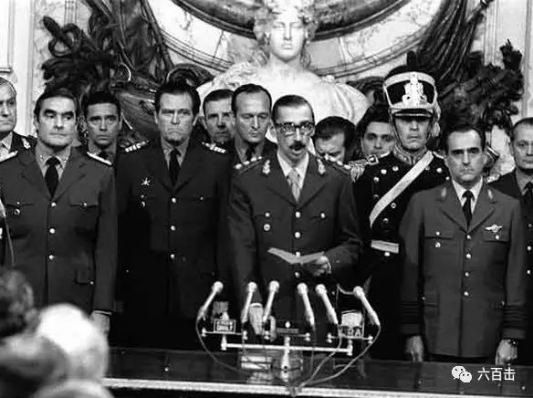
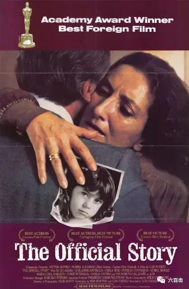
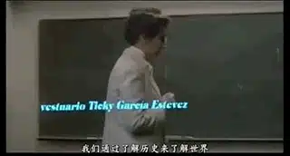
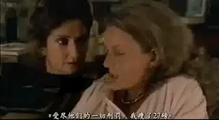
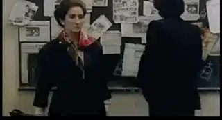
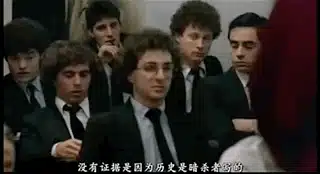
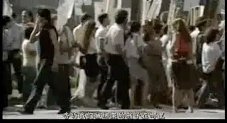
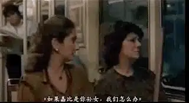
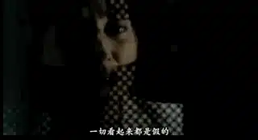

对异见分子的迫害之所以找不到证据
是因为历史书是由暗杀者编写的
1976年到1983年间，阿根廷爆发了最黑暗的「 肮脏战争」， 阿根廷民选政府被豪尔赫·拉斐尔·魏地拉领导的军政府推翻，取得政权后，军政府针对异议人士进行了残酷镇压。

在这段时期，9000-30000人被失踪，他们大多是敢于质疑和发声的学生、记者和活动人士，却遭到军政府不合法的逮捕、拷打以及杀害。
被迫害的孕妇在监狱中生育， 这些婴儿一般会被政府下属的军人或政治家庭非法收养，而母亲一般都被杀害。
成千上万的被拘留者被麻醉，然后被装上飞机、脱光衣服，最后被扔进里约热内卢普拉塔或大西洋，这些行动被称为“ 死亡飞行”。
就是在这样恐怖的环境之下，阿根廷诞生了一部奥斯卡最佳外语片《官方说法》。

剧本是在恐怖时期完成的，导演在剧本完成后，本来打算秘密拍摄本片，幸运的是，开始着手拍摄的时候，独裁政府却倒下了。
电影在独裁政府倒台的第二年上映，引起极大反响，女主角凭借其出色的演技获得了戛纳电影节主竞赛单元最佳女主角。
电影通过一名原本对政治不闻不问的阿根廷历史女教师的觉醒来控诉独裁政府的恐怖行径。
通过这位中产阶级“岁月静好”梦想的破灭来呼吁人们关心政治，去挑战和怀疑「 官方说法」，去追寻和直面官方故意掩藏的真相，是一部不可多得的民主启蒙电影。
01 岁月静好
电影刚开始的第一个镜头就是学校里喇叭的特写，它仿佛是独裁政府的喉舌，每天都在向阿根廷人民进行洗脑教育。
在这样的环境之下，历史老师艾丽西亚也是一个被谎言所蒙蔽的普通人，她讲着独裁政府精心编排的“历史书”，但却很自信的告诉学生：
想要了解这个世界，就一定要学好历史

事实上，她丝毫不关心这个国家发生的事情，她拥有幸福的家庭，丈夫是政府官员，虽然艾丽西亚无法怀孕，但是他们领养了一个可爱女孩加比。
而第一次让艾丽西亚产生冲击的是她的闺蜜安娜，安娜失踪了几个月，忽然归来后，两人聚在一起彻夜长谈。
艾丽西亚第一次从身边的人听说了军政府的暴行，安娜告诉她，她因为自己的男朋友是异见分子而受牵连，被抓紧监狱后，受到各种非人的严刑拷打，甚至被人强暴。

而在安娜向艾丽西亚哭诉这一切的时候，艾丽西亚的丈夫在房间里偷听着她们的对话。
作为一个政府官员，他比任何人都清楚安娜所遭遇的暴行。
虽然已经是深夜，他却丝毫没有睡意，眼睛睁的大大的，似乎因为安娜的哭诉在遭受着良心的拷问。
02 历史是由暗杀者编写的
除了安娜，学生们对身边发生的事也非常敏感，他们关心政治和失踪的同胞，在教室里大声朗读倡导自由的书籍。
学生们无法忍受艾丽西亚对正义的漠视和对真正历史的无知。
上课前，他们将刊登失踪人口的报纸贴满在黑板上，希望老师能够正视真相。

艾丽西亚愤怒地让学生将报纸撕下，学生质问艾丽西亚：
如果发表事实被禁止，那谎言和贫穷就会胜利
艾丽西亚倒是很机智，她也质问学生，你们所说的并没有证据支持。
一位学生却冷静地告诉艾丽西亚：
没有证据，是因为历史是由暗杀者写的

无奈之下，艾丽西亚将这位“愤青”学生请出了课堂。
下班回家的路上，艾丽西亚第一次注意到上街游行的同胞。

03 我选择真相
安娜和学生的行为对于艾丽西亚而言顶多是一种冲击，很快就能够将这些负能量的东西抛之脑后。
可是安娜无意间的一句话却刺到了艾丽西亚敏感的神经。
安娜告诉艾丽西亚她在监狱亲眼目睹在监狱出生的小孩被军官抱走，而小孩的母亲却被杀害。
这引起了艾丽西亚的恐慌，她立马想到了她和丈夫收养的宝贝女孩加比。
饭桌上，艾丽西亚向丈夫旁敲侧击加比的身世，可是丈夫并不打算告诉她事情的经过，反而让她以后不要再提这件事。
这更加加剧了艾丽西亚的恐慌，她开始暗中追查加比的身世。
无意中，艾丽西亚看到了一个寻人启事，上面的的女孩和加比很像。
发布寻人启事的是一位老人家，再三确认下，艾丽西亚最担心的事情发生了。
果不其然，加比是政治犯的女儿，老人家告诉艾丽西亚，小女孩的父母已经失踪了好几年，而她是加比的外婆。

真相让艾丽西亚难以接受，这样的事情已经完全颠覆了她对自己家庭生活的想象。

艾丽西亚不知道如何面对加比，也不知道如何面对她“无意”中发现的真相。
她带着加比的外婆来到自己的家中，可是老人却被自己的丈夫赶走，丈夫告诉艾丽西亚：
我们现在不是很好么，加比这么小，还什么都不懂，你为什么非要揪着加比的过去不放，你告诉加比真相对加比和我们会有一丝好处么？
甚至大发脾气的丈夫对艾丽西亚进行了家暴。
艾丽西亚最终带着加比出走，离开了用谎言所编织的中产阶级梦想。
电影的最后一个镜头对准了坐在秋千上的加比，她单纯、善良，哼唱着儿瑶：
在遗忘的土地上，我走了三步，迷路了.....
电影最终结束于迷茫的小孩，她代表了不明真相的芸芸大众。
他们不知道独裁政府的恐怖，也不明白少数人的斗争和牺牲，但却是独裁暴行最直接的受害者。
除了小女孩的隐喻，因为剧本写于恐怖时期，特殊的背景之下，使得电影到处充满了耐人寻味的政治隐喻。
比如开头代表官方意识形态洗脑喉舌的喇叭，比如说代表独裁政府的丈夫，他知道真相却一直掩盖真相甚至最后动用暴力镇压寻求真相的人。
而最大的隐喻是艾丽西亚的觉醒，这使得整部电影充满了理想主义光辉，真相有能力击穿谎言粉饰的太平。
而为了无数个“加比”的未来，“艾丽西亚”有责任正视和揭露真相。
正如那名顶撞艾丽西亚的学生所言：
真相，就像道德，包含着它的回报，把它讨论并揭露出来，带来就是灿烂和辉煌
因此，在政治高压的环境下追寻真相，首先要学会怀疑。
如果你看到的历史书都是断断续续，都只是意义、标志、导火索这些只有概念却没有血肉的历史，那就要去质疑，而不是被麻痹和洗脑。
如果你看到公权说一套做一套，那这些说法都是「 官方说法」，我们需要保持清醒。
需要铭记实用主义和利己如果没有了真相那将是地狱，因为好人的沉默是独裁最肥沃的土壤。
所以，阿根廷为了让人民永远铭记「 肮脏战争」的教训，将每年的3月24日定为真相与正义纪念日。

关注并回复：官方说法
获取电影资源
相关推荐：
100双绝望的眼睛
伯格曼遇见希区柯克 | 杀死了神圣，也就杀死了爱情
这里没有挑逗你眼目情欲的小鲜肉
也没有挑动你肉体情欲的段子
更没有膨胀你今生骄傲的鸡血
我们只在乎那些最质朴真诚的作品
在那里我们才能恢复真正的想象力
我们也坚信这才是我们真正需要的

ID:Six_hundred_hits
长按二维码，一键关注
【六百击】
-END-
电影评论
尽情分享朋友圈

苹果打赏通道